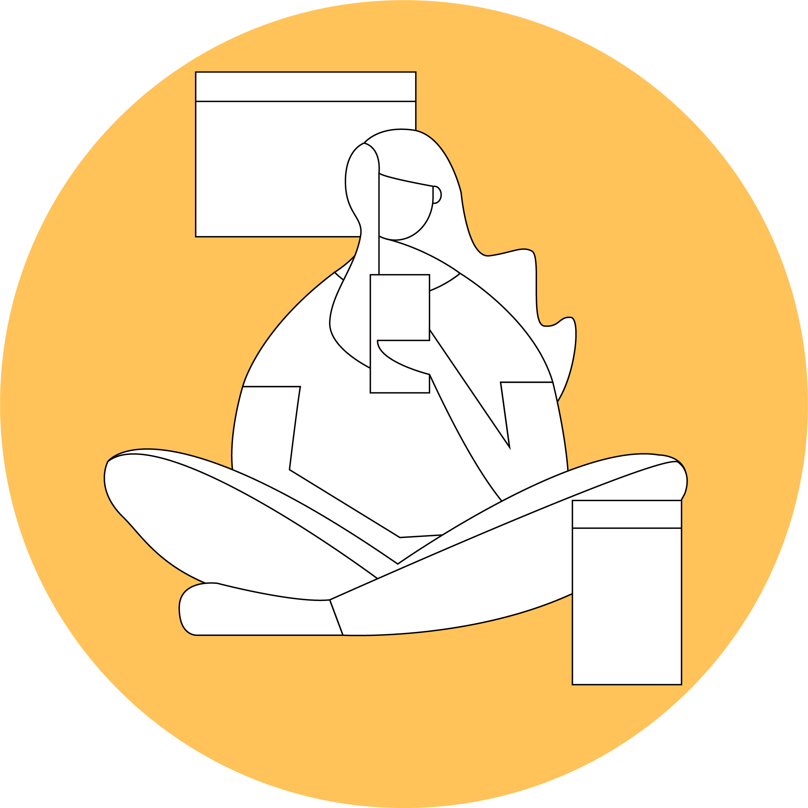
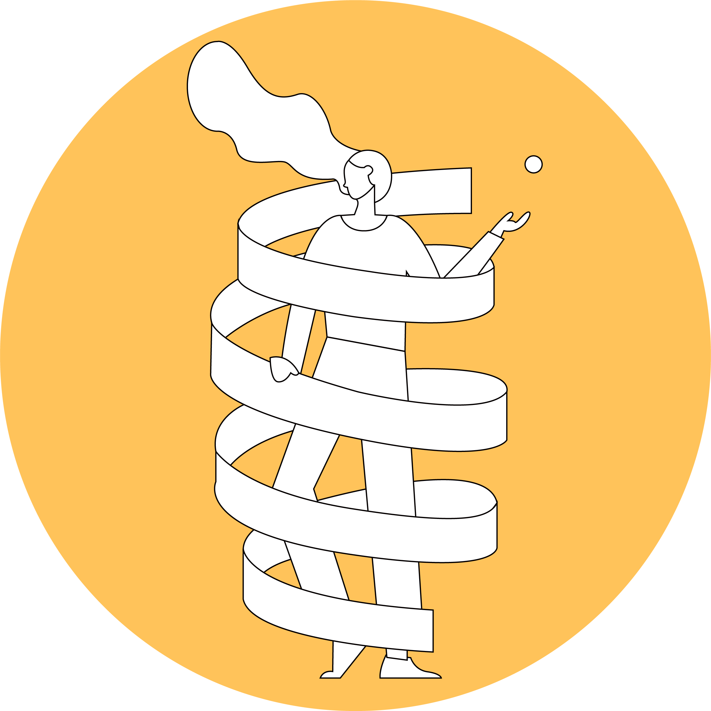
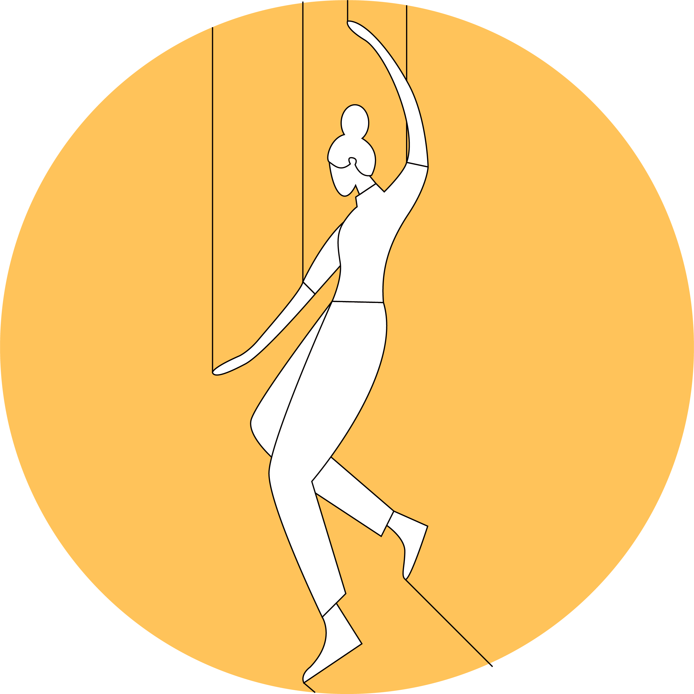
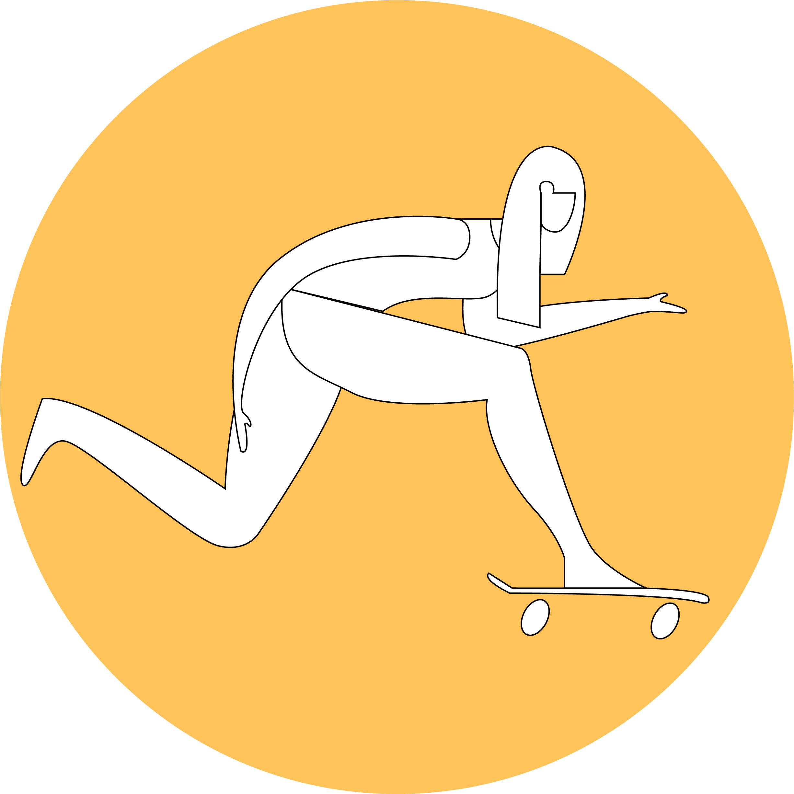
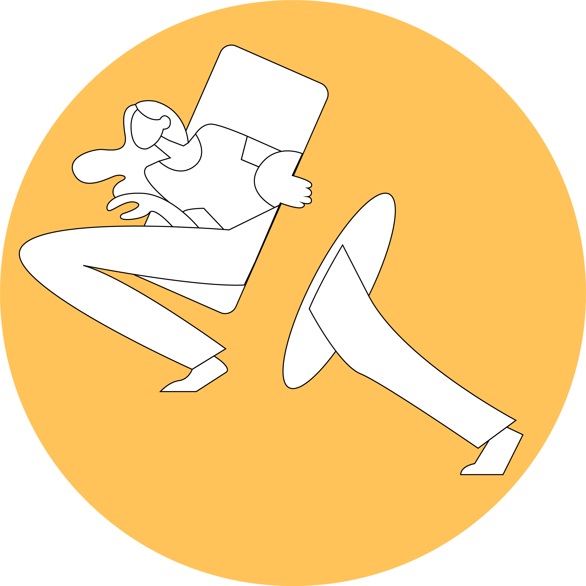
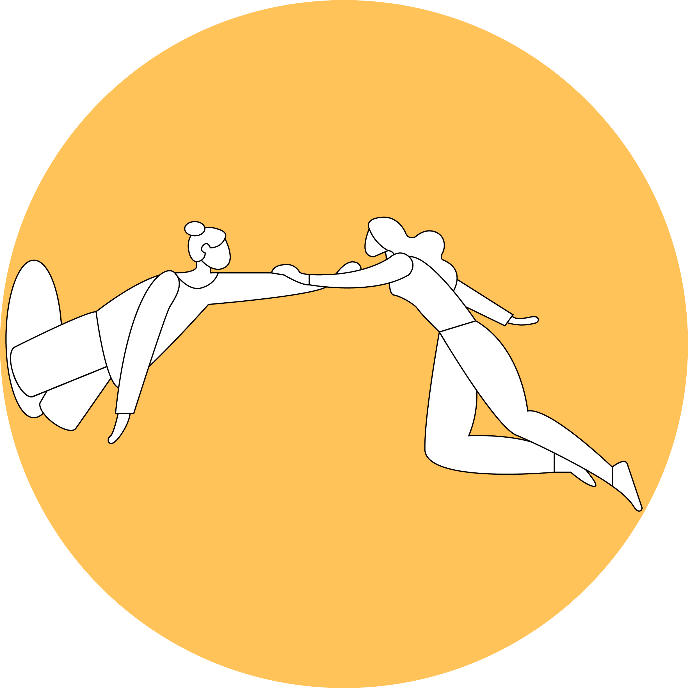

01.

"현실인가? 꿈인가?"
시각이나 느낌 차이로 현실과 꿈 속을 구분할 수 없었기 때문에 발생하는 유형입니다.
이 유형은 실제와 똑같이 구현되기 때문에, 기억의 오류현상로, 현실에 영향을 줄 수 있기 때문에 가장 위험한 꿈입니다.
02.

"나는 신이다."
루시드 드림 공간 속에서 유일하게 세상을 통제할 수 있는 유형입니다.
이 유형은 자신이 신과 같이 전지전능해서 모든 것을 마음대로 할 수 있지만, 깨어난 후 허무함을 느낄 수도 있습니다.
03.

"누군가 나를 조종한다"
마치 쌍둥이를 만난듯, 나와 똑같이 생긴 사람이 '나'라고 하며 시작되는 유형입니다.
이 유형에서 나와 닮은 사람은 '나'보다 우위에서 '나'를 통제하려고 하며, 디스맨과 같은 존재의 역할을 합니다.
04.

"도망쳐야 산다"
나를 죽이려는 사람이나 괴물이 나를 쫓아올 때, 나 이외의 것은 통제할 수 없기 때문에 발생하는 유형입니다.
통제할 수 없어'나'는 도망치며, 도중에 잡히기 직전에 꿈을 인지하고 잠에서 깨어나게 됩니다.
05.

"꿈 속에서 꿈 속으로"
말 그대로 꿈 속에서 또 꿈을 꾸는 유형입니다.
이 유형은 깨어날 때, 한 번 이상의 꿈에 대한 인식과 깨어나기 위한 노력이 필요하기 때문에
몸에 피로가 쌓이며, 두려움을 느낄 수 있습니다.
06.

"과거나 미래를 마주하다"
과거를 회상하거나 미래를 상상하는 느낌과 달리 현실이 되어 있는 것처럼 느끼는 유형입니다.
그때의 모습과 비슷한 형상을 띄고 있어, 능력은 물론, 모습조차도 마음대로 바꾸기는 쉽지 않습니다.